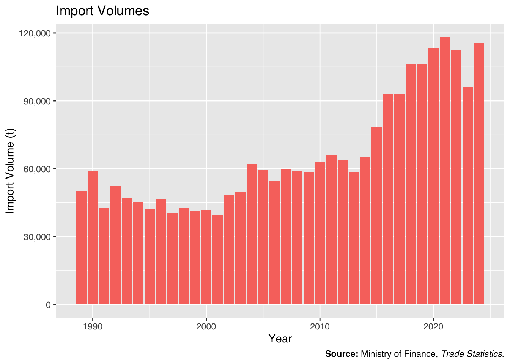
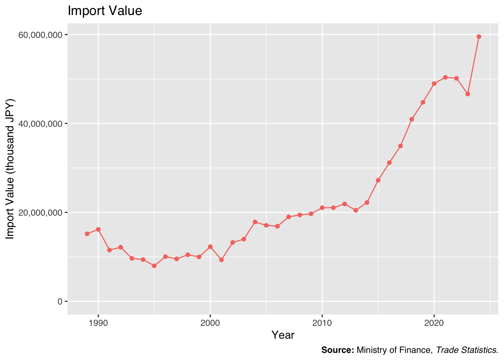

library(readxl)
library(dplyr)
library(pdftools)
library(stringr)
library(arrow)
library(DT)
library(ggplot2)
library(scales)
library(ggtext)
outdir <- "../data/trade"
figdir <- "../fig"
dir.create(outdir, showWarnings = FALSE, recursive = TRUE)
dir.create(figdir, showWarnings = FALSE)
outdirestat <- "../data/e-stat/貿易統計"
dir.create(outdirestat, showWarnings = FALSE, recursive = TRUE)Trade Statistics: Import Volumes and Values
1 Data
財務省貿易統計 - 普通貿易統計（CSV形式の統計表）
普通貿易統計
1.1 1989–2005
xlsx_url <- "https://www.e-stat.go.jp/stat-search/file-download?statInfId=000006428488&fileKind=0"
xlsx_file <- "k001c-002-053-000-000.xls"
file_path <- file.path(outdirestat, xlsx_file)
if (!file.exists(file_path)) {
download.file(xlsx_url, file_path)
}
df1989_2005 <- read_excel(file_path, skip = 5)
df1989_2005 <- df1989_2005 |>
filter(!is.na(...1)) |>
mutate(
year = case_when(
grepl("平\\.元", ...1) ~ 1989,
grepl("平\\.(\\d+)", ...1) ~ 1988 + as.numeric(sub("平\\.(\\d+).*", "\\1", ...1))
)
)
df1989_2005 |>
glimpse()Rows: 17
Columns: 7
$ ...1 <chr> "平.元(1989)", "平.2(1990)", "平.3(1991)", "平.4(1992)", "平.…
$ 第一単位 <chr> NA, NA, NA, NA, NA, NA, NA, NA, NA, NA, NA, NA, NA, NA,…
$ 第一数量 <dbl> 0, 0, 0, 0, 0, 0, 0, 0, 0, 0, 0, 0, 0, 0, 0, 0, 0
$ 第二単位 <chr> "KG", "KG", "KG", "KG", "KG", "KG", "KG", "KG", "KG", "…
$ 第二数量 <dbl> 50175410, 58880344, 42651397, 52265054, 47058123, 45511…
$ `金額（千円）` <dbl> 15169177, 16180512, 11522682, 12160136, 9644546, 938600…
$ year <dbl> 1989, 1990, 1991, 1992, 1993, 1994, 1995, 1996, 1997, 1…write.table(df1989_2005, file = file.path(outdir, "import_volumes_and_value_1989-2005.csv"), sep = ",", row.names = FALSE)1.2 1998–2008
years <- 1998:2008
statInfIds <- c(
"1998" = "000002269817",
"1999" = "000002313950",
"2000" = "000002347202",
"2001" = "000002413920",
"2002" = "000002487544",
"2003" = "000002214385",
"2004" = "000002263383",
"2005" = "000002263262",
"2006" = "000002099370",
"2007" = "000002133168",
"2008" = "000002532108"
)
data_list <- list()
for (year in years) {
pdf_url <- paste0("https://www.e-stat.go.jp/stat-search/file-download?statInfId=", statInfIds[as.character(year)], "&fileKind=2")
pdf_file <- paste0("d13h", substr(as.character(year), 3, 4), "i002.pdf")
file_path <- file.path(outdirestat, pdf_file)
if (!file.exists(file_path)) {
download.file(pdf_url, file_path)
}
pdf_text <- pdftools::pdf_text(file_path)
df <- pdf_text[3] |>
str_split("\n") |>
unlist() |>
(\(x) x[str_detect(x, "KG\\s+\\d")])() %>%
gsub("\\*\\*", "", .) %>%
gsub("(\\d{4})\\s{2,}(4‑ST)", "\\1_\\2", .) %>%
paste(collapse = "\n") %>%
read.table(text = ., header = FALSE, stringsAsFactors = FALSE)
colnames(df) <- c("COMODITY", "UNIT2_month", "QUANTITY2_month", "VALUE_month", "QUANTITY2", "VALUE")
df <- df |>
mutate(year = year)
data_list[[as.character(year)]] <- df
}
df1998_2008 <- bind_rows(data_list) |>
filter(COMODITY == "0810.50‑000")
df1998_2008 |>
glimpse()Rows: 11
Columns: 7
$ COMODITY <chr> "0810.50‑000", "0810.50‑000", "0810.50‑000", "0810.50‑…
$ UNIT2_month <chr> "KG", "KG", "KG", "KG", "KG", "KG", "KG", "KG", "KG", …
$ QUANTITY2_month <int> 1718467, 1063939, 2457491, 2038106, 89100, 34094, 7446…
$ VALUE_month <int> 358102, 221336, 747720, 120907, 18122, 5661, 167033, 1…
$ QUANTITY2 <int> 42536727, 41248647, 41531009, 39564199, 48310573, 4971…
$ VALUE <int> 10459462, 9990171, 12281186, 9326738, 13229979, 139735…
$ year <int> 1998, 1999, 2000, 2001, 2002, 2003, 2004, 2005, 2006, …write.table(df1998_2008, file = file.path(outdir, "import_volumes_and_value_1998-2008.csv"), sep = ",", row.names = FALSE)1.3 2009–2024
years <- 2009:2024
data_list <- list()
for (year in years) {
csv_url <- paste0("https://www.e-stat.go.jp/stat-search/file-download?statInfId=",
switch(as.character(year),
"2009" = "000007064293",
"2010" = "000008622910",
"2011" = "000012679370",
"2012" = "000018862159",
"2013" = "000023618925",
"2014" = "000028156986",
"2015" = "000031362184",
"2016" = "000031528657",
"2017" = "000031670699",
"2018" = "000031792535",
"2019" = "000031907313",
"2020" = "000032046081",
"2021" = "000032254759",
"2022" = "000040117466",
"2023" = "000040223254",
"2024" = "000040255838"),
"&fileKind=1")
csv_file <- paste0("ik-110h", year, "i001.csv")
file_path <- file.path(outdirestat, csv_file)
if (!file.exists(file_path)) {
download.file(csv_url, file_path)
}
data_list[[as.character(year)]] <- read.csv(file_path)
}
df2009_2024 <- bind_rows(data_list) |>
filter(HS == "'081050000'")
df2009_2024 |>
glimpse()Rows: 16
Columns: 47
$ Exp.or.Imp <int> 2, 2, 2, 2, 2, 2, 2, 2, 2, 2, 2, 2, 2, 2, 2, 2
$ Year <int> 2009, 2010, 2011, 2012, 2013, 2014, 2015, 2016, 2017, 2…
$ HS <chr> "'081050000'", "'081050000'", "'081050000'", "'08105000…
$ Unit1 <chr> " ", " ", " ", " ", " ", " ", " ", " ", " ", "…
$ Unit2 <chr> "KG", "KG", "KG", "KG", "KG", "KG", "KG", "KG", "KG", "…
$ Quantity1.Year <dbl> 0, 0, 0, 0, 0, 0, 0, 0, 0, 0, 0, 0, 0, 0, 0, 0
$ Quantity2.Year <dbl> 58500529, 62962844, 65894753, 63970012, 58747147, 65061…
$ Value.Year <dbl> 19668266, 21045802, 21045528, 21899763, 20460112, 22211…
$ Quantity1.Jan <dbl> 0, 0, 0, 0, 0, 0, 0, 0, 0, 0, 0, 0, 0, 0, 0, 0
$ Quantity2.Jan <dbl> 22642, 336, 0, 67990, 242898, 0, 0, 439794, 568231, 597…
$ Value.Jan <int> 5929, 275, 0, 10958, 57463, 0, 0, 165014, 185933, 19566…
$ Quantity1.Feb <int> 0, 0, 0, 0, 0, 0, 0, 0, 0, 0, 0, 0, 0, 0, 0, 0
$ Quantity2.Feb <dbl> 11321, 0, 201330, 460362, 252621, 63573, 52986, 614477,…
$ Value.Feb <int> 2901, 0, 39006, 79297, 60678, 20152, 19505, 213635, 276…
$ Quantity1.Mar <dbl> 0, 0, 0, 0, 0, 0, 0, 0, 0, 0, 0, 0, 0, 0, 0, 0
$ Quantity2.Mar <dbl> 22642, 7707, 180830, 624832, 123012, 63573, 114999, 535…
$ Value.Mar <int> 6184, 3434, 38196, 125139, 32591, 20353, 44441, 176844,…
$ Quantity1.Apl <dbl> 0, 0, 0, 0, 0, 0, 0, 0, NA, NA, NA, NA, NA, NA, NA, NA
$ Quantity2.Apl <dbl> 8544410, 9148251, 12825291, 8345796, 8606237, 12427058,…
$ Value.Apl <int> 2674860, 2932735, 4067267, 2947896, 2717057, 4490055, 4…
$ Quantity1.May <dbl> 0, 0, 0, 0, 0, 0, 0, 0, 0, 0, 0, 0, 0, 0, 0, 0
$ Quantity2.May <dbl> 10673301, 16522280, 14053026, 10681306, 11773732, 11443…
$ Value.May <int> 3311428, 5489416, 4405987, 3804818, 3966071, 4362383, 5…
$ Quantity1.Jun <dbl> 0, 0, 0, 0, 0, 0, 0, 0, 0, 0, 0, 0, 0, 0, 0, 0
$ Quantity2.Jun <dbl> 12548304, 8136401, 7403965, 14762536, 9819845, 8825520,…
$ Value.Jun <int> 3760243, 2502913, 2295986, 5075655, 3354065, 3080824, 5…
$ Quantity1.Jul <dbl> 0, 0, 0, 0, 0, 0, 0, 0, 0, 0, 0, 0, 0, 0, 0, 0
$ Quantity2.Jul <dbl> 6893036, 7837454, 6688744, 6919920, 7218512, 11858804, …
$ Value.Jul <int> 1989516, 2351549, 2192093, 2237534, 2451653, 4236505, 3…
$ Quantity1.Aug <dbl> 0, 0, 0, 0, 0, 0, 0, 0, 0, 0, 0, 0, 0, 0, 0, 0
$ Quantity2.Aug <dbl> 7479022, 9237805, 10882732, 9439411, 9333407, 5911868, …
$ Value.Aug <int> 2284020, 2764265, 3278387, 3072969, 2671831, 1758156, 3…
$ Quantity1.Sep <int> 0, 0, 0, 0, 0, 0, 0, 0, 0, 0, 0, 0, 0, 0, 0, 0
$ Quantity2.Sep <dbl> 7786517, 5562295, 7367085, 5603495, 5314333, 7234915, 7…
$ Value.Sep <int> 2078831, 1470699, 1993387, 1633727, 1422607, 2113872, 2…
$ Quantity1.Oct <dbl> 0, 0, 0, 0, 0, 0, 0, 0, 0, 0, 0, 0, 0, 0, 0, 0
$ Quantity2.Oct <dbl> 3465654, 4961097, 1790599, 2540959, 2649169, 3782486, 4…
$ Value.Oct <int> 2724880, 2841888, 580725, 1016250, 717864, 1121450, 132…
$ Quantity1.Nov <dbl> 0, 0, 0, 0, 0, 0, 0, 0, 0, 0, 0, 0, 0, 0, 0, 0
$ Quantity2.Nov <dbl> 1053680, 1255404, 4448165, 4458792, 2498197, 3415632, 3…
$ Value.Nov <int> 829474, 607823, 2146598, 1881840, 2005953, 996378, 1214…
$ Quantity1.Dec <int> 0, 0, 0, 0, 0, 0, 0, 0, 0, 0, 0, 0, 0, 0, 0, 0
$ Quantity2.Dec <dbl> 0, 293814, 52986, 64613, 915184, 34560, 351163, 2982787…
$ Value.Dec <int> 0, 80805, 7896, 13680, 1002279, 11365, 125023, 971538, …
$ Quantity1.Apr <dbl> NA, NA, NA, NA, NA, NA, NA, NA, 0, 0, 0, 0, 0, 0, 0, 0
$ Quantity2.Apr <dbl> NA, NA, NA, NA, NA, NA, NA, NA, 10065185, 9949732, 1458…
$ Value.Apr <int> NA, NA, NA, NA, NA, NA, NA, NA, 4123234, 4243465, 67482…write.table(df2009_2024, file = file.path(outdir, "import_volumes_and_value_2009-.csv"), sep = ",", row.names = FALSE)1.4 Merge
df <- bind_rows(
df1989_2005 |>
select(year, quantity2 = `第二数量`, value = `金額（千円）`) |>
filter(year < 1998),
df1998_2008 |>
select(year, quantity2 = QUANTITY2, value = VALUE),
df2009_2024 |>
select(year = Year, quantity2 = Quantity2.Year, value = Value.Year)
)
write.table(df, file = file.path(outdir, "import_volumes_and_value_all.csv"), sep = ",", row.names = FALSE)
write_parquet(df, sink = file.path(outdir, "import_volumes_and_value_all.parquet"))1.5 Read the Data
# df <- read.csv(file.path(outdir, "import_volumes_and_value_all.csv"), header = TRUE, check.names = FALSE)
df <- read_parquet(file.path(outdir, "import_volumes_and_value_all.parquet"))2 Tables
DT::datatable(
df, rownames = FALSE, filter = 'top',
extensions = 'Buttons',
options = list(
pageLength = 10,
dom = 'Blfrtip',
buttons = list(
c('csv', 'excel'),
I('colvis')
)
)
) |>
DT::formatCurrency(grepl("quantity2|value", names(df)), currency = "", interval = 3, mark = ",", digits = 0)3 Figures
3.1 Import Volume
df_clean_quantity <- df |>
mutate(ton = quantity2 / 1000)
p <- ggplot(df_clean_quantity, aes(x = year, y = ton, fill = "black")) +
geom_bar(stat = "identity") +
scale_y_continuous(labels = scales::label_comma()) +
labs(
title = "Import Volumes",
x = "Year",
y = "Import Volume (t)",
caption = "**Source:** Ministry of Finance, _Trade Statistics_."
) +
theme(
legend.position = "none",
text = element_text(family = "Helvetica"),
plot.caption = element_markdown()
)
ggsave("import_volumes_by_year.pdf", plot = p, path = figdir, width = 8, height = 6)
p
3.2 Import Value
df_clean_value <- df
p <- ggplot(df_clean_value, aes(x = year, y = value, color = "black")) +
geom_line() +
geom_point() +
scale_y_continuous(limits = c(0, NA), labels = scales::label_comma()) +
labs(
title = "Import Value",
x = "Year",
y = "Import Value (thousand JPY)",
caption = "**Source:** Ministry of Finance, _Trade Statistics_."
) +
theme(
legend.position = "none",
text = element_text(family = "Helvetica"),
plot.caption = element_markdown()
)
ggsave("import_value_by_year.pdf", plot = p, path = figdir, width = 8, height = 6)
p